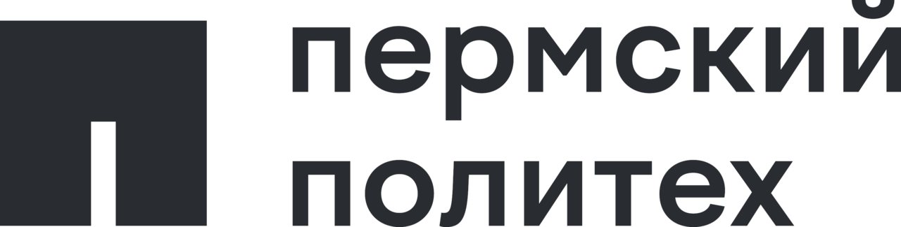
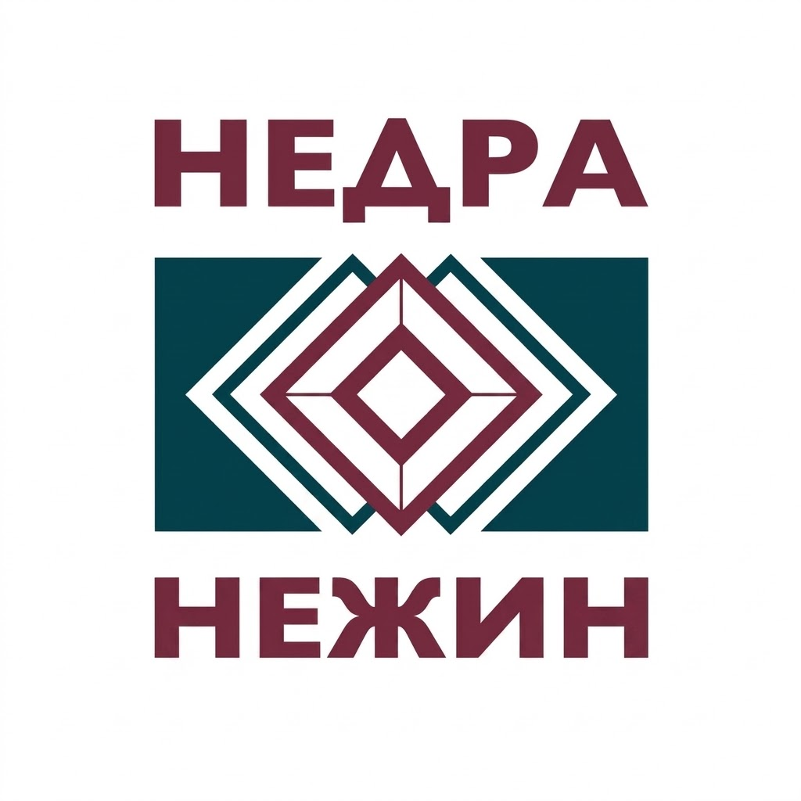
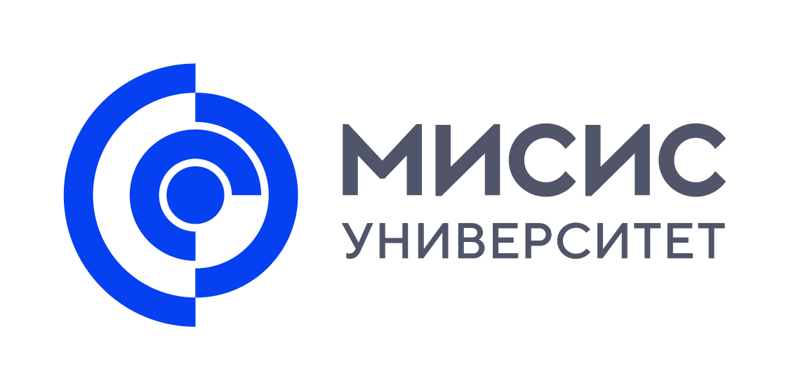
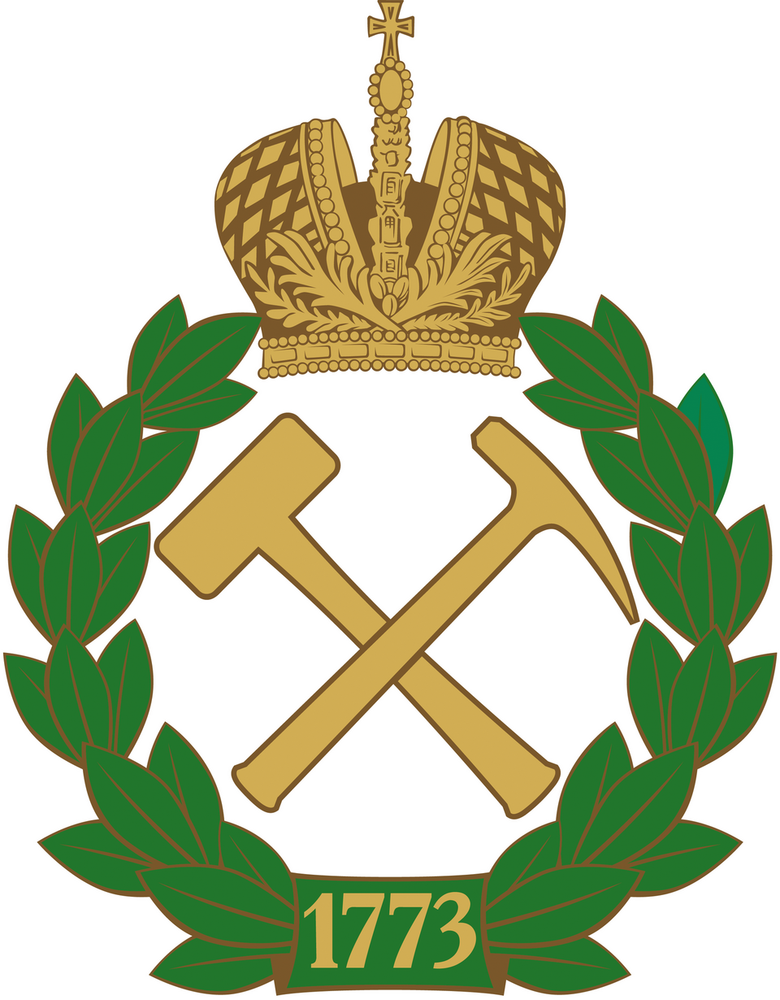
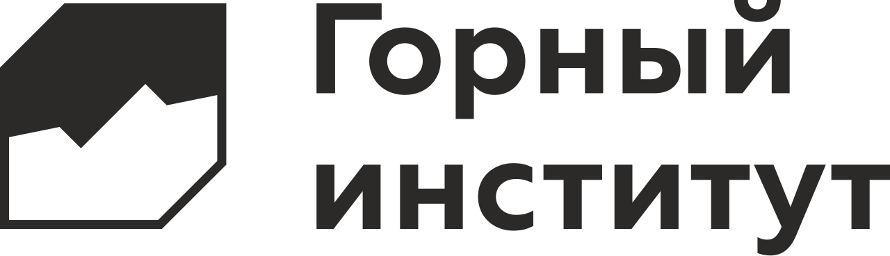

Горный институт УрО РАН приглашает
70 лет
Пермской школе
рудничной аэрологии
Даты01–02 октября 2026
МестоПНИПУ
О событии 01
Сохраняем историю.
Создаём будущее.
Приглашаем Вас принять участие в торжественном мероприятии, посвящённом 70-летнему юбилею Пермской школы рудничной аэрологии.
В программе — пленарное заседание с историческими докладами о становлении ведущих научных школ аэрологии, развитии институтов и горнодобывающей промышленности. На профильных круглых столах участники обсудят актуальные вопросы отрасли через призму опыта ведущих учёных и молодых специалистов.
70лет научной
школе
школе
7исторических
докладов
докладов
3профильных
круглых стола
круглых стола
100+участников
мероприятия
мероприятия
30+организаций
участников
участников
30+профильных
учёных
учёных
Программа 02
Программа
мероприятий
Время указано местное, Пермь
10:00–13:40
Пленарное заседание
Модератор — Левин Лев Юрьевич
Приветственное слово
Барях Александр АбрамовичИстория развития горных заводов Урала
Черных Александр ВасильевичИстория развития Санкт-Петербургской научной школы рудничной аэрологии и горной теплофизики
Гендлер Семен ГригорьевичИстория развития Московской научной школы аэрологии и программных комплексов
Каледина Нина Олеговна, Кобылкин Сергей СергеевичКофе-брейк
Развитие научной школы рудничной аэрологии и проветривания калийных рудников в Пермском политехе
Файнбург Григорий ЗахаровичРазвитие калийной промышленности Верхней Камы
Смирнов Эдуард ВладимировичРазвитие калийной промышленности Беларуси
Головатый Иван ИвановичСтановление ГИ УрО РАН
Левин Лев ЮрьевичКофе-брейк
14:30–16:00
Круглые столы
Актуальные вопросы рудничной аэрологии
01 Проблемные вопросы современной рудничной вентиляции
02 «Красные линии» теплового режима рудников
03 Молодёжный ответ на актуальные проблемы рудничной аэрологии
10:00–18:00
Секционные заседания
VII Международная научно-практическая конференция
Охрана труда и безопасность производства, добыча и использование калийно-магниевых солей
Безопасность горных работ на калийных рудниках
Очно и онлайн · ПНИПУ, корпус Б, ауд. 210Охрана труда и управление рисками
Онлайн · BigBlueButtonПриродные соли в лечении и оздоровлении
Онлайн · BigBlueButton
PDF · 3,9 МБ · Полная программа, ссылки и контакты
Регистрация 03
Будем рады
видеть Вас
Заполните форму участника. Подтверждение регистрации появится здесь после сохранения заявки.
Не получается отправить? Открыть Google Форму напрямую ↗При поддержке 04
Организации
участники





Место проведения 05
В самом сердце
Перми
ПНИПУ
Пермский национальный исследовательский политехнический университет
Комсомольский проспект, 29
Пермь, 614990
Контакты 06